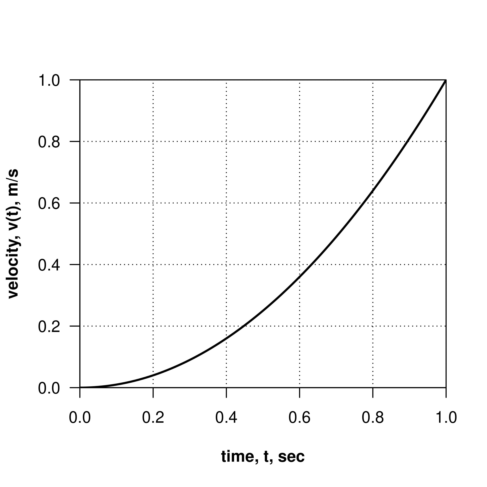
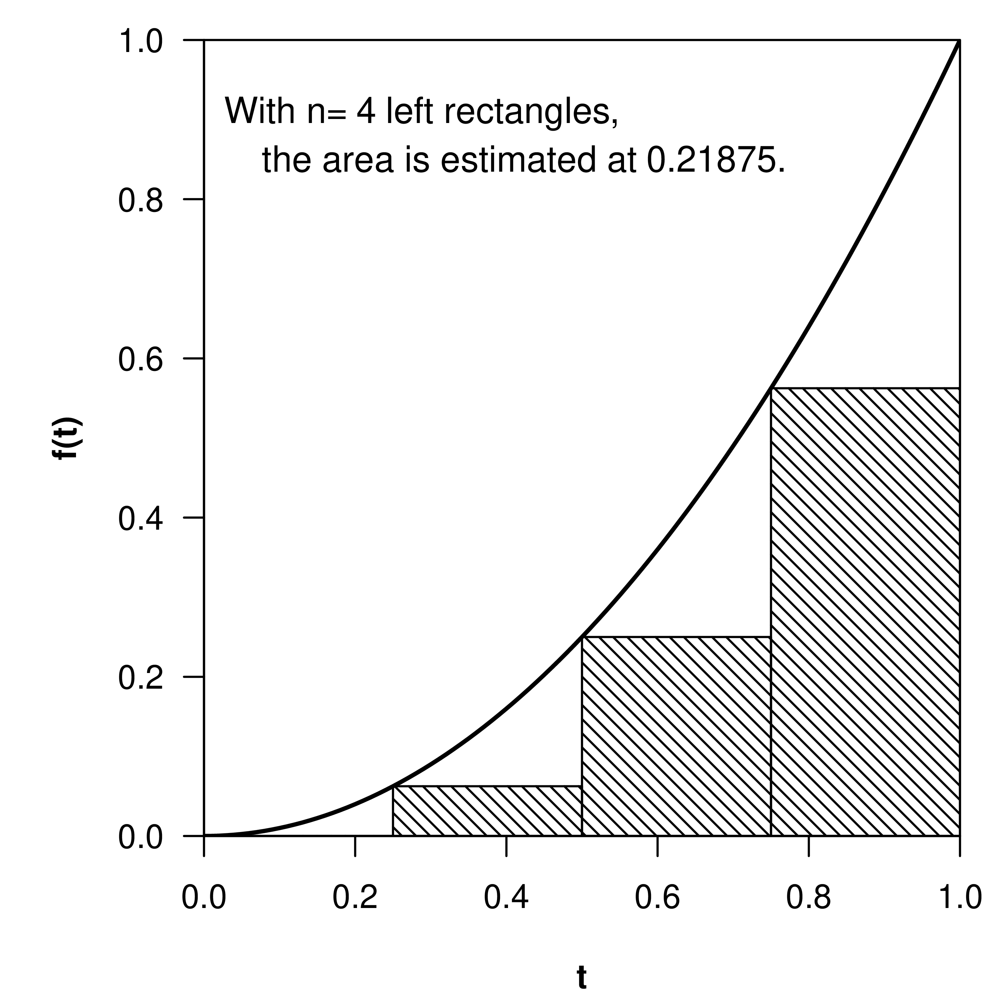
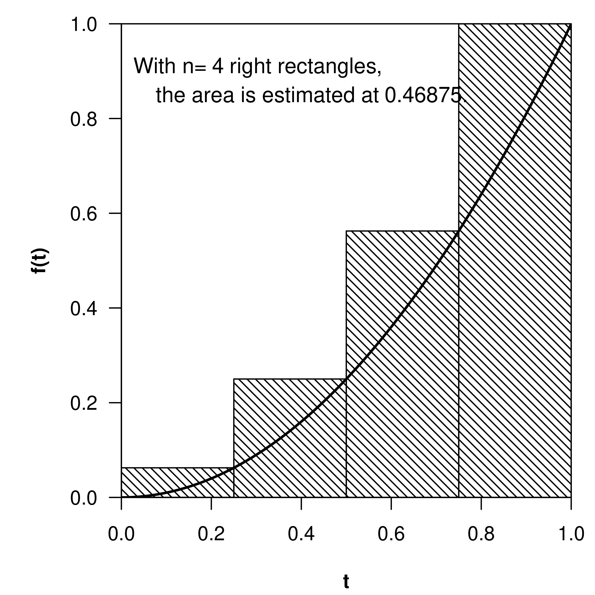
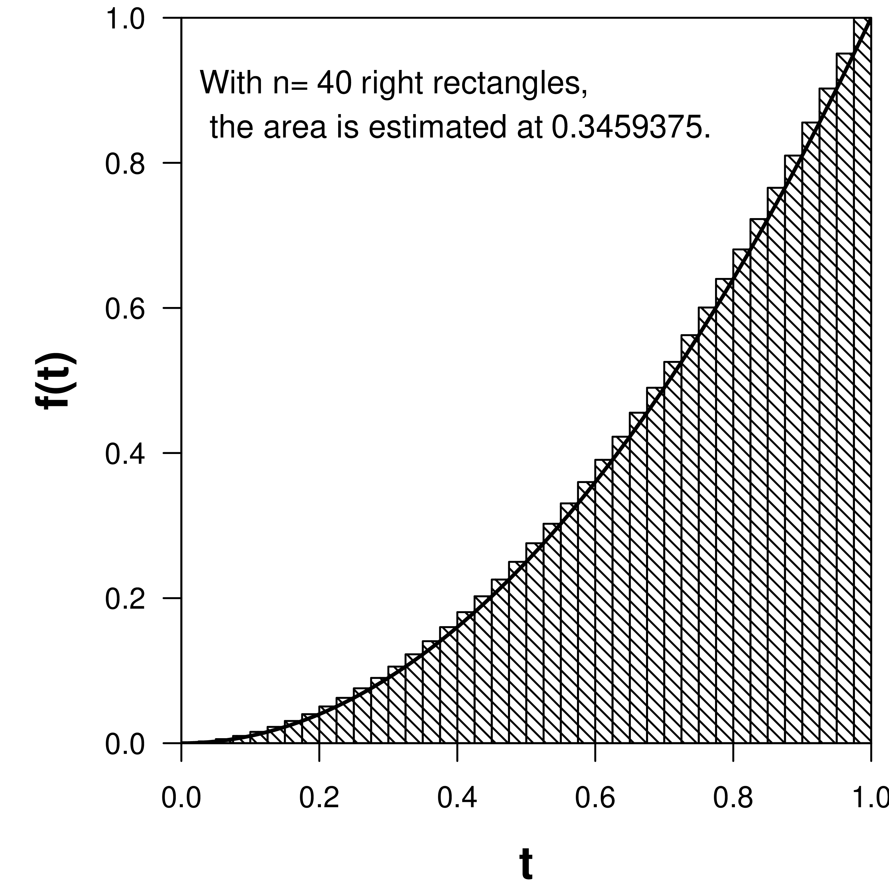

We introduce a new type of integral problem with powerful applications.
Position from velocity.
Recall the formula of your velocity function
\begin{equation*}
v(t) =
\end{equation*}
From this function we used the relationship that \(\displaystyle \frac{dp}{dt} = v(t)\) to compute our position function \(p(t)\text{.}\)
New twist.
Suppose you walk from class to class with this velocity and it takes you 50 seconds to walk from one class to the next, how many meters have you walked? Plot the velocity function to find out.
At certain times hallways and doorways are crowded and prevent you from maintaining your constant speedy pace towards class.
Figure3.3.1.image
Consider that your velocity for a brief period of time is described by a quadratic function
\begin{equation*}
v(t) = t^{2}
\end{equation*}
as you accelerate from a red light where your initial velocity is zero.
We try to fill the space, from left to right, under the graph with rectangles whose widths are known and whose heights are related to the height of the graph at some point.
We take advantage of the fact that the area of a rectangle by multiplying its width and height.
Given the area of a collection of rectangles, we can add the areas of the rectangles to get an approximation to the original area.

Figure3.3.2.image
Draw \(n=5\) ‘left-hand’ rectangles to approximate the area under the curve. Heights can be estimated from the graph or calculated using the corresponding function value.
\begin{equation*}
\begin{aligned}
\left(\substack{\text{area}\\\text{under}\\\text{curve}}\right)
&\approx \text{sum of the area of the rectangles}\\
&= R_{1}+ R_2 + R_3 + R_4 + R_5\\
&= w_{1}h_{1} + w_2h_2+ w_3h_3+ w_4h_4+ w_5h_5\\
& = (0.2)(0^{2}) + (0.2)(0.2^{2}) + (0.2)(0.4^{2}) +(0.2)(0.6^{2})
+(0.2)(0.8^{2})\\
& = \dots\\
& = 0.24\end{aligned}
\end{equation*}
Figure3.3.3.image
Repeat the exercise above using the same number of ‘right-hand’ rectangles.
For the function \(f(t) = t^{2}\text{,}\) consider the following examples of left-hand and right-hand Riemann sums used to approximate the value of the definite integral, whose exact value will be calculated very soon.

Figure3.3.4.image

Figure3.3.5.image
Figure3.3.6.image
Figure3.3.7.imageFigure3.3.8.image

Figure3.3.9.image
The result of computing a definite integral is a number, representing the area under a curve (or between the curve and the horizontal axis). In particular,
\begin{equation*}
\boxed{\int_a^b f(t)\,dt =
\lim_{n\rightarrow\infty}\Big(\text{area of $n$ rectangles}\Big)}
\end{equation*}
read “the integral from \(a\) to \(b\) of \(f(t)\) with respect to \(t\text{.}\)”This is the Riemann integral or definite integral defined to be the area of \(n\) rectangles that collectively approximate the area under the curve as \(n\rightarrow\infty\text{.}\)
Key observations.
A few key observations can be made about what we are doing now and how it differs from what we have done before.
limits of integration
an indefinite integral is
a definite integral is
For any continuous function \(f(x)\) and any indefinite integral \(\displaystyle F(x) = \int
f(x)\,dx\text{,}\)
The value of \(\displaystyle \int_{0}^1
t^{2}\,dt\text{,}\) which gives the area under the curve \(f(t) = t^{2}\) between \(t=0\) and \(t=1\) can be calculated using the Fundamental Theorem of Calculus. Since the integrand \(t^{2}\) is continuous on the interval from \(t=0\) to \(t=1\) we find
i.e. the total change between times \(a\) and \(b\) is the change between \(a\) and some intermediate time \(c\) plus the change between time \(c\) and the final time \(b\text{.}\)
Suppose our female Atlantic sturgeon continues to obey the equation
Since \(f(x) = 1\) is continuous on the interval from \(x=0\) to \(x=1\text{,}\) the definite integral \(\displaystyle\int_{0}^1
1\,dx\) evaluates to \(\displaystyle\int_{0}^1 1\,dx =
\left.(x)\right|_{0}^1 = (1) - (0) = 1\text{.}\)
Since \(f(x) = 1\) is continuous on the interval from \(x=0\) to \(x=2\text{,}\) the definite integral \(\displaystyle\int_{0}^{2}
1\,dx\) evaluates to \(\displaystyle\int_{0}^{2} 1\,dx =
\left.(x)\right|_{0}^{2} = (2) - (0) = 2\text{.}\)
Since \(f(x) = x-x^{2}\) is continuous on the interval from \(x=0\) to \(x=1\text{,}\) the definite integral \(\displaystyle\int_{0}^1 x-x^{2}\,dx\) evaluates to \(\displaystyle\int_{0}^1 x-x^{2}\,dx = \left.\left(\dfrac{1}{2}x^{2} -
\dfrac{1}{3}x^{3}\right)\right|_{0}^1 = \left(\dfrac{1}{2} -
\dfrac{1}{3}\right) - 0 = \dfrac{1}{6}\text{.}\) Recall that \(0^{2}=0^{3}=0\) and \(1^{2} = 1^{3} = 1\text{.}\)